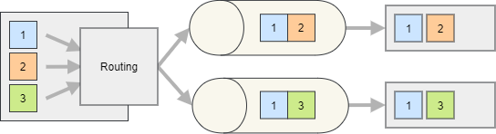

Producing Messages
This guide explains how to configure producers and publish messages to Kafka or MQTT.
Configure Producers
services.AddSilverback()
.WithConnectionToMessageBroker(options => options.AddKafka())
.AddKafkaClients(clients => clients
.WithBootstrapServers("PLAINTEXT://localhost:9092")
.AddProducer("producer1", producer => producer
.Produce<MyMessage>("endpoint1", endpoint => endpoint
.ProduceTo("my-topic"))));
Use AddProducer (Kafka) or AddClient (MQTT) to create a producer/client instance. Use Produce<TMessage> to associate message types to endpoints. An endpoint usually specifies a destination topic via ProduceTo.
Note
With MQTT, the same client instance can both produce and consume.
Tip
Naming producers/clients and endpoints is optional, but helps with logs and avoids duplicate registration across modules/features.
Tip
Underlying client configuration:
Publish Messages
Once configured, publish messages via IPublisher.
await _publisher.PublishAsync(new MyMessage { /* ... */ });
Add Metadata (WrapAndPublish)
Use WrapAndPublishAsync to attach headers and other metadata.
await _publisher.WrapAndPublishAsync(
new MyMessage { /* ... */ },
envelope => envelope
.AddHeader("x-priority", 1)
.AddHeader("x-random", Random.Shared.Next()));
Alternatively to the extension methods you can use the IIntegrationPublisher. This interface declares the same WrapAndPublish methods defined as extensions for the basic IPublisher, offering better testability (as you cannot mock extension methods).
Publish Batches (WrapAndPublishBatch)
Use WrapAndPublishBatchAsync to publish multiple messages efficiently.
public Task PublishBatchAsync(IEnumerable<MyMessage> messages) =>
_publisher.WrapAndPublishBatchAsync(
messages,
envelope => envelope
.AddHeader("x-priority", 1)
.AddHeader("x-random", Random.Shared.Next()));
Some overloads allow mapping from a streaming source.
public Task PublishBatchAsync(IAsyncEnumerable<Order> orders) =>
_publisher.WrapAndPublishBatchAsync(
orders,
order => new OrderReceived { OrderNumber = order.Number },
(envelope, order) => envelope.AddHeader("x-priority", order.Priority));
Alternatively to the extension methods you can use the IIntegrationPublisher. This interface declares the same WrapAndPublishBatch methods defined as extensions for the basic IPublisher, offering better testability (as you cannot mock extension methods).
Routing
The Produce<TMessage> method is used to configure the specified message type to be routed through the producer. The ProduceTo method specifies the topic to which the messages should be sent. Each endpoint can be configured with additional settings, such as specific headers or message properties, or a different serialization strategy.
{kind=link}

By default, Silverback routes the messages based on the message type. However, you can also implement custom routing logic.
Note
Messages published and routed to a producer cannot be subscribed to locally (within the same process) unless the endpoint is explicitly configured with the EnableSubscribing method. However, you can still subscribe to the IOutboundEnvelope<TMessage> without EnableSubscribing.
Routing Function
A routing function can be used to determine the endpoint based on the message content or metadata (via IOutboundEnvelope<TMessage>). The function is called for each message and should return the destination topic name.
services.AddSilverback()
.WithConnectionToMessageBroker(options => options.AddKafka())
.AddKafkaClients(clients => clients
.WithBootstrapServers(...)
.AddProducer(producer => producer
.Produce<MyMessage>(endpoint => endpoint
.ProduceTo(envelope => envelope.Headers.GetValue<int>("x-random") % 2 == 0 ? "my-even" : "my-odd"))));
Tip
Several overloads of the ProduceTo method let you build the destination topic from the message or the envelope, giving you access to the payload, headers, and broker-specific metadata.
You can also use a format string where only the variable parts are generated.
services.AddSilverback()
.WithConnectionToMessageBroker(options => options.AddKafka())
.AddKafkaClients(clients => clients
.WithBootstrapServers(...)
.AddProducer(producer => producer
.Produce<MyMessage>(endpoint => endpoint
.ProduceTo(
"my-{0}",
message => message.Id % 2 == 0 ? new object[] { "even" } : new object[] { "odd" }))));
Resolver Class
You can also implement routing in a dedicated resolver, resolved via DI (so you can inject services). The resolver must implement:
services.AddSilverback()
.WithConnectionToMessageBroker(options => options.AddKafka())
.AddKafkaClients(clients => clients
.WithBootstrapServers(...)
.AddProducer(producer => producer
.Produce<MyMessage>(endpoint => endpoint
.UseEndpointResolver<MyTopicResolver>())));
public class MyTopicResolver : IKafkaProducerEndpointResolver<MyMessage>
{
public TopicPartition GetTopicPartition(IOutboundEnvelope<MyMessage> envelope)
{
return new TopicPartition(
"my-" + envelope.Message.Priority,
envelope.Headers.GetValue<int>("x-random") % 10);
}
}
Dynamic Routing
If you want to select the destination at publish time (instead of in configuration), enable dynamic routing.
services.AddSilverback()
.WithConnectionToMessageBroker(options => options.AddKafka())
.AddKafkaClients(clients => clients
.WithBootstrapServers(...)
.AddProducer(producer => producer
.Produce<MyMessage>(endpoint => endpoint
.ProduceToDynamicTopic())));
await _publisher.WrapAndPublishAsync(
new MyMessage { ... },
envelope => envelope.SetKafkaDestinationTopic("my-topic"));
Kafka Partitioning
For Kafka producers, you can also specify the partition to produce to or influence it using a partitioning key. See Kafka Keys and Partitioning.
Filtering
You can add a predicate to filter which messages are produced to a given endpoint.
services.AddSilverback()
.WithConnectionToMessageBroker(options => options.AddKafka())
.AddKafkaClients(clients => clients
.WithBootstrapServers(...)
.AddProducer(producer => producer
.Produce<MyMessage>(endpoint => endpoint
.ProduceTo("my-even-messages")
.Filter(message => message.Number % 2 == 0))
.Produce<MyMessage>(endpoint => endpoint
.ProduceTo("my-odd-messages")
.Filter(message => message.Number % 2 == 1))));
Additional Resources
- API Reference
- Using the Message Bus
- Consuming Messages
- Samples
- Other guides in this section for in-depth information about producer features.